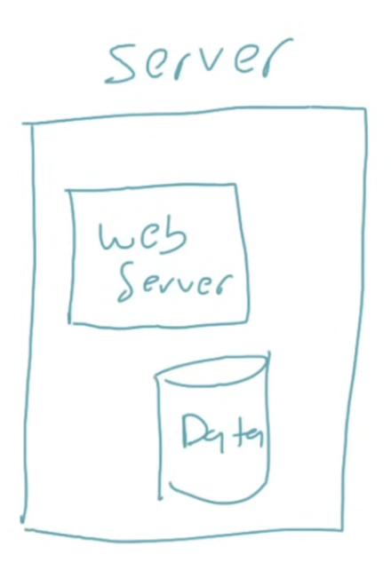
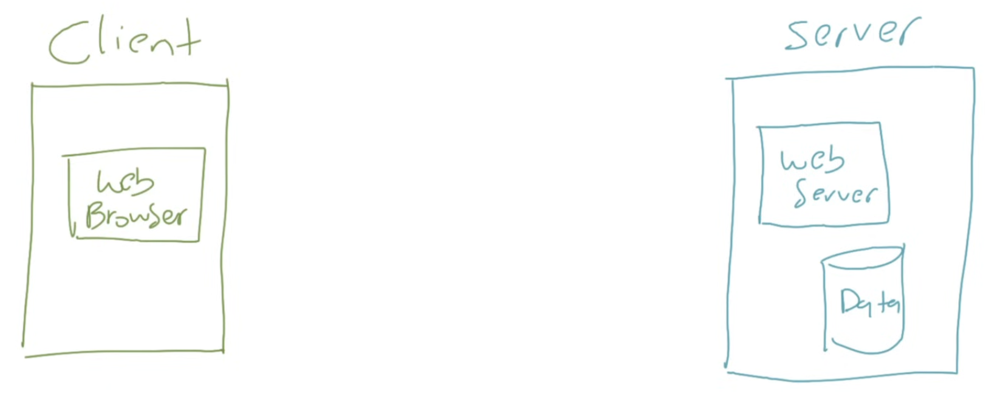
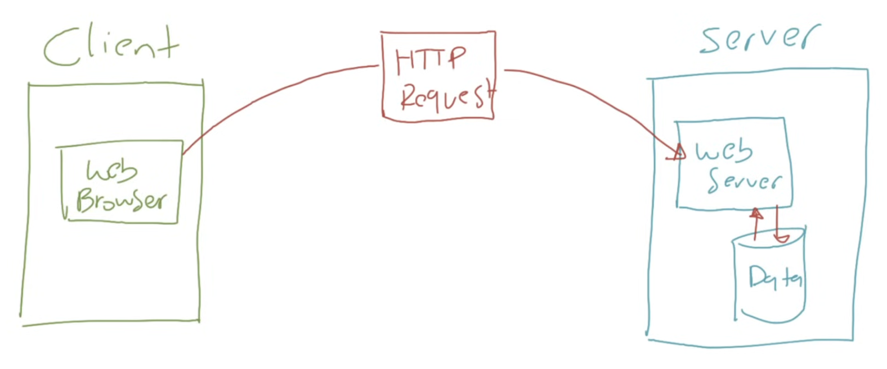
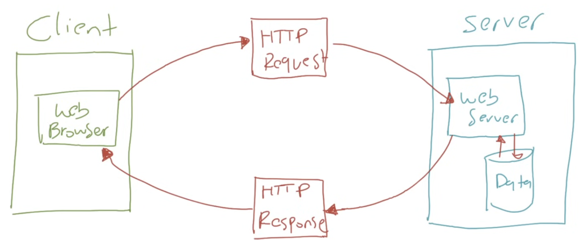

HTTP Flow
- Bagaimana alur kerja HTTP?
- Dalam HTTP, biasanya terdapat 2 pihak yang terlibat, yaitu Client dan Server
- Client akan mengirimkan Request
- Dan Server akan menerima Request dan membalas dengan Response
Server
- Server merupakan sebuah komputer, dimana semua informasi disimpan pada komputer tersebut
- Komputer server biasanya menjalankan aplikasi Web Server agar bisa menerima protocol HTTP
Diagram HTTP Flow

Client
- Client merupakan komputer yang bertugas mengirim HTTP Request ke komputer Server
- Untuk mengirim request HTTP, biasanya client akan menggunakan aplikasi Web Browser
- Client dan Server harus terkoneksi dalam jaringan yang sama, agar bisa berkomunikasi
- Misalnya, client dan server terhubung dalam jaringan internet
Diagram HTTP Flow

Request
- Client akan mengirim request ke Server dalam bentuk HTTP Request
- HTTP Request berisikan informasi seperti lokasi resource, data yang dikirim jika ada, dan lainnya
- HTTP Request akan diterima oleh Server
- Selanjutnya Server akan memproses request yang diminta Client tersebut
Diagram HTTP Flow

Response
- Seteleh Server memproses HTTP Request yang dikirim oleh Client
- Server akan membalas dengan HTTP Response
- HTTP Response biasanya berisikan data yang diminta oleh Client dalam HTTP Request
Diagram HTTP Flow

Back ||
Next